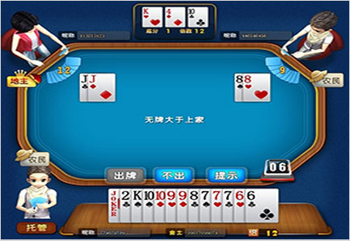

斗地主
游戏介绍
斗地主，是一种在中国流行的纸牌游戏。是关于旧社会阶级斗争详见土地改革运动。 斗地主是一种扑克游戏。游戏最少由3个玩家进行，用一副54张牌（连鬼牌），其中一方为地主，其余两家为另一方，双方对战，先出完牌的一方获胜。该扑克游戏最初流行于中国湖北武汉市汉阳区，现已逐渐在全球各地流行。
规则介绍
一副牌 54 张，一人 17 张，留 3 张做底牌，在确定地主之前玩家不能看底牌，地主确定后，底牌亮出，底牌分给地主。 翻一张地主牌，地主牌被谁拿到谁是地主。棋牌平台上为第一轮叫牌的玩家由系统选定。叫牌按出牌的顺序轮流进行，每人只能叫一次。叫牌时可以叫“1分”，“2分”，“3分”，“不叫”。后叫牌者只能叫比前面玩家高的分或者不叫。叫牌结束后所叫分值最大的玩家为地主；如果有玩家叫“3分”则立即结束叫牌，该玩家为地主；如果都不叫，则重新发牌，重新叫牌。 叫牌结束后，玩家可选择“加倍”和“不加倍”。加倍后玩家输赢结算得分翻倍，不加倍得分无倍率变化。 将三张底牌交给地主，并亮出底牌让所有人都能看到。地主首先出牌，然后按逆时针顺序依次出牌，轮到用户跟牌时，用户可以选择“不出”或出比上一个玩家大的牌。某一玩家出完牌时结束本局。